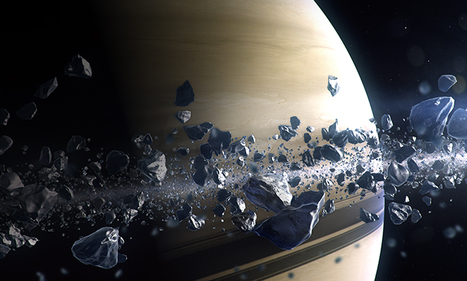

토성 탐험

[인천출발]토성 직항 | 타이탄 | 엔셀라두스 | 미마스
토성의 아름다운 고리와 여러 위성을 체험할 수 있는 여행 상품입니다.
토성 궤도를 도는 우주선을 타고 환상적인 우주 여행을 경험해보세요.
- SpaceY Y360 왕복 우주선 / 60박 61일/ 특식 3회
- 여행 내용: 토성 통과 / 육각형 구름 / 고리 / 타이탄 / 엔셀라두스 / 미마스
- 26일차 ~ 30일차: 프로그램 1 - 토성 행성 탐험
- 31일차 ~ 35일차: 프로그램 2 - 토성 고리, 위성 탐험
- 인원: 3인 ~ 9인
- 가격: 5,327,880,000원 ~
여행 일정
-
1일차 ~ 25일차
• 인천 → 토성: SpaceY Y360으로 이동
-
26일차
• 토성 도착
-
27일차
• 토성 궤도 따라서 돌기
-
28일차 ~ 29일차
• 경로 결정 후 토성 통과
-
30일차
• 토성 육각형 구름으로 이동
• 육각형 구름 위에서 우주 유영
• 사진 촬영
-
31일차
• 토성 고리 근접
• 토성 고리 얼음 수집
-
32일차 ~ 33일차
• 타이탄 메테인 호수 잠수
• 타이탄 얼음 분출 화산 탐험
• 타이탄 윙슈트 비행 체험
-
34일차
• 얼음 빙수 만들기(섭취 금지)
• 얼음 층 아래 바다 잠수
-
35일차
• 허셜 충돌구 최고높이 등반
• 허셜 충돌구 번지점프
-
36일차 ~ 61일차

• 52일차: 목성 스윙바이
• 61일차: 지구 귀환
집합 장소
인천 우주센터
준비물
신분증, 통화, 운동 기구, 위생용품, 보조 배터리, 개인처방 약, 의료 기록
***나머지 필수 용품은 우주선에 배치되어 있습니다***
식사
전투 식량 제공
26일차, 29일차, 35일차는 토성 특식 제공
숙소
SpaceY Y360 우주선 내부 숙소
여행 시 유의 사항
1. 외부 활동 시 우주복과 같은 안전 장비를 항상 착용하세요.
2. 토성과 토성의 위성의 압력과 온도에 노출될 수 있으므로 주기적으로 우주복을 점검하세요.
3. 안전 로프의 연결 상태를 항상 확인하세요.
4. 통신이 불안정할 경우 즉시 우주선으로 귀환하세요.
5. 가이드의 안내에 따라 이동하세요.